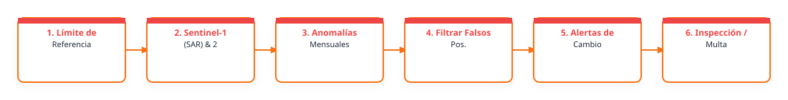

1. Problema que busca atender
La deforestación ilegal amenaza la biodiversidad y servicios ecosistémicos de uno de los bosques tropicales más ricos del mundo en Darién, Panamá. Identificar los casos de deforestación oportunamente representa un condición habilitadora para atender los ilícitos y motivar a las comunidades a transaccionar de prácticas extractivas a métodos productivas sostenibles.
2. Relevancia del problema
ANCON cuenca con décadas trabajando en Darién y actualmente labora para impulsar la transformación de medios de vida necesaria para consolidar un modelo económico compatible con la sostenibilidad de la riqueza ecosistémica de la provincia.
3. Producto esperado
Tipo de entregable: Flujo de trabajo; Reporte; Visor web; Aplicación; Repositorio técnico
Descripción del producto: Los polígonos de sitios deforestadas con vistas de las imágenes, presentados de manera accionable y dinámica por medio de un visor web que contenga todo el creciente conjunto de productos y análisis derivados (superficie, cuenca, área protegida, uso de suelo anterior al cambio, etc.), también reportes estáticos generados automáticamente
Componentes de despliegue sugeridos: Google Earth Engine App; Visor web; GeoServer u otro servidor geoespacial
Nivel de acceso previsto: publico
Forma de uso institucional: El visor sería consultado en línea por funcionarios y ciudadanos, a la vez que reportes estáticos serían creados y enviados automáticamente a autoridades.
Requiere actualización: si
Frecuencia / Método de actualización: Esta por definirse que tan automático termina siendo todo el flujo - cada vez que se agrega una imagen nueva se deben determinar los casos de cambio de uso de suelo y generar y enviar los reportes
4. Flujo de trabajo preliminar
El siguiente diagrama conceptualiza el procesamiento de datos y flujo técnico sugerido para la solución:

Descripción del flujo metodológico imaginado:
Ya tenemos flujo para descarga y reconstrucción de imágenes de alta resolución. También tenemos experiencia haciendo aplicaciones web con ArcGIS Online. Lo que nos falta es un flujo que use polígonos de entrenamiento para delimitar cambios. No creo que una clasificación tradicional (segmentación, clasificación supervisada) sea lo mejor, por la alta resolución de las imágenes, falta de bandas y por el hecho que los valores de píxel no son reflectancia pura.
Algoritmos o índices clave: Machine learning en GEE o ArcGIS
5. Datos e insumos identificados
Insumos satelitales y capas locales necesarias para el despliegue del prototipo:
| Insumo / Variable | Detalle en la Ficha |
|---|---|
| Datos Satelitales / Fuentes Copernicus | Otro; imágenes WorldView y Legion reconstruidas de image tiles RGB |
| Datos Locales Disponibles | si, muchos |
| Datos Requeridos / Faltantes | No indicado en la ficha |
| Documento Relacionado | No indicado en la ficha |
| Enlaces Externos / Observaciones | Enlace externo |